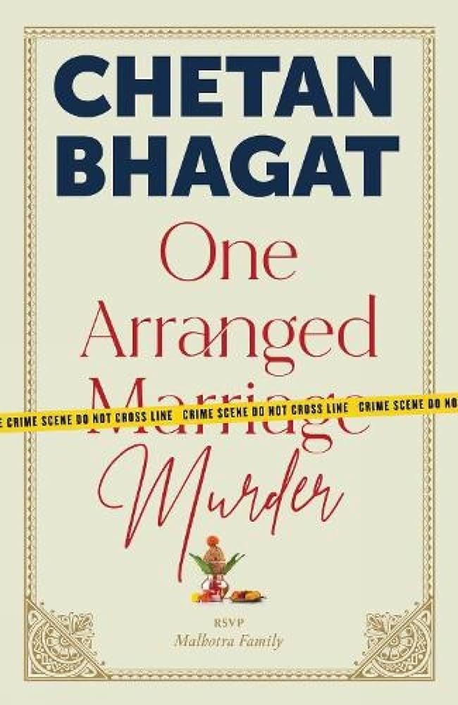
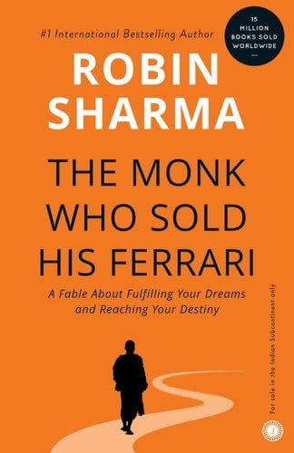
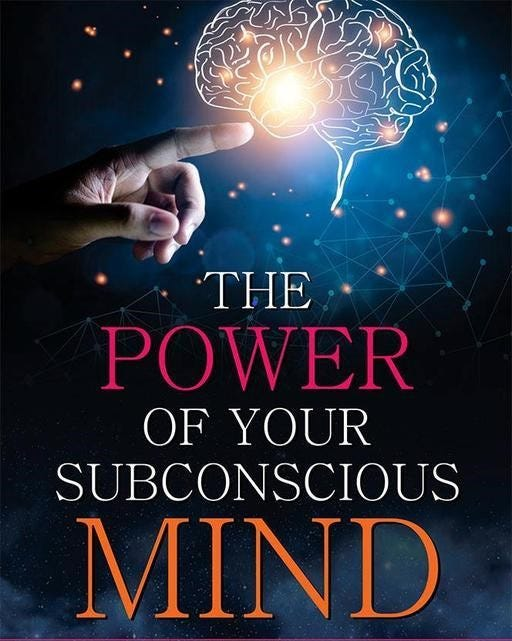
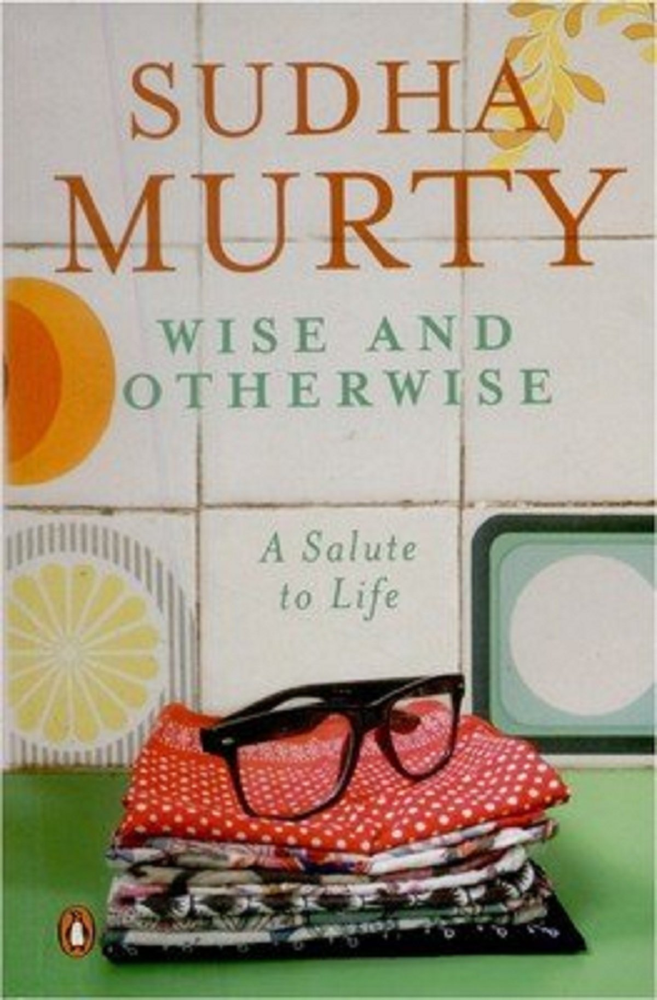
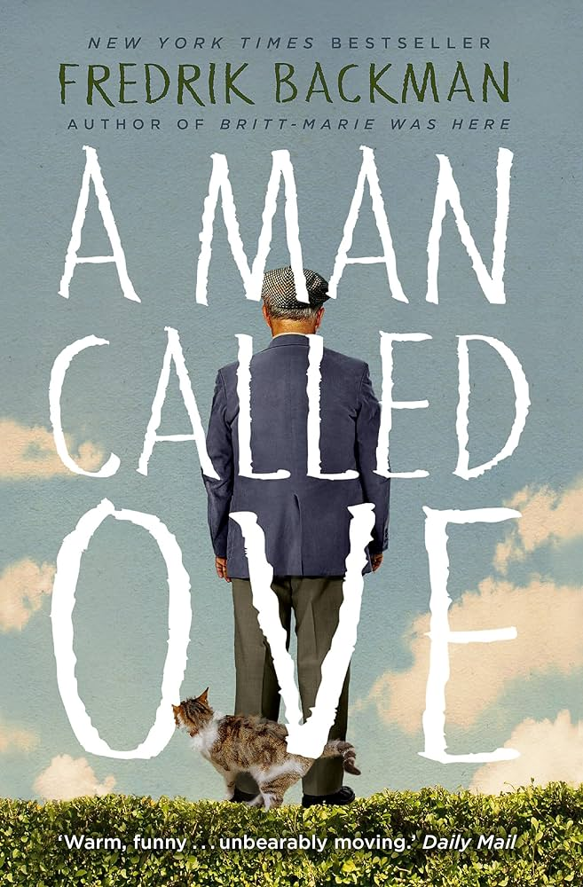
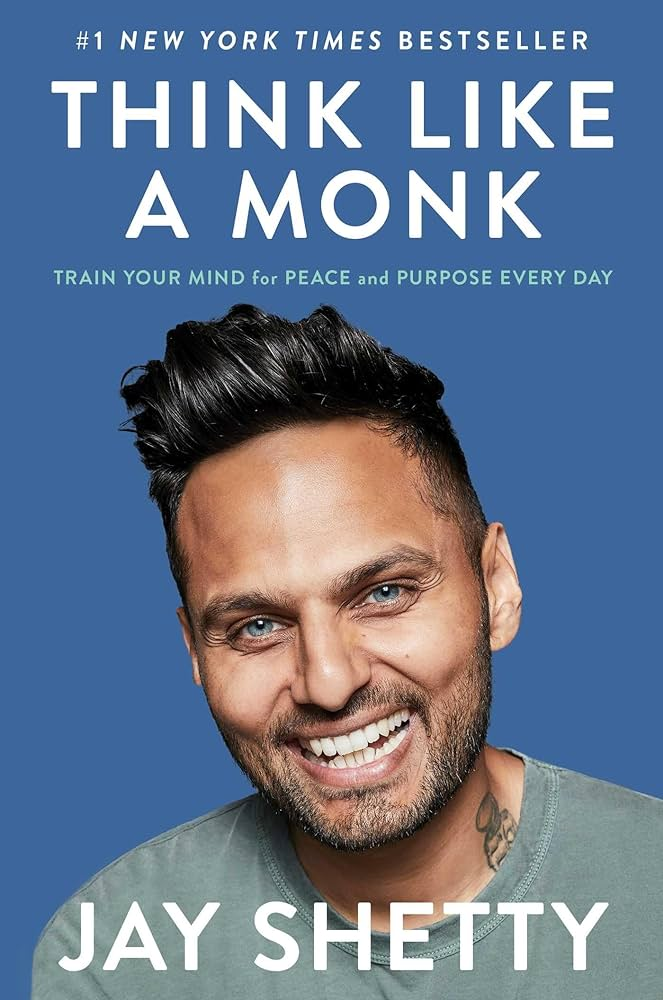

Wish I Could Tell You is a romantic novel by Durjoy Datta- India's best romance icon among youngsters.
The story revolves around Ananth and Anusha - both struggling in their own ways and eventually moving together.

One Arranged Murder
One Arranged Murder is one of the best books by Chetan Bhagat. Its title is intriguing enough to read it - without even thinking twice. The story revolves around two amateur detectives(and best friends)
Keshav and Saurabh who find their friendship in a difficult situation while solving a murder case.

The Monk Who Sold His Ferrari
Search for the best books to read and don't find "The Monk Who Sold His Ferrari" - impossible! A renowned
inspirational fiction, the book is all about how to ditch materialism
and find a simple yet profound way to live life

The Power of Your Subconscious Mind
The Power of Your Subconscious Mind by Dr. Joseph Murphy
is an interesting combination of time-honoured spiritual wisdom with cutting-edge scientific research

Wise and Otherwise: A Salute to Life
Wise and Otherwise is one of the best books by Sudha Murthy.
The book explains how understanding human and human nature is one of the toughest jobs in this world.
With an interesting title and contant inside, the book shows how things that seem
right or good or vice versa can be completely different if explored to the proper depth.
The Alchemist
The Alchemist by Paulo Coelho is another timeless classic that is unmissable in almost
every "books-to-read" list. Easy to understand and simple to read, the book presents a simple
fable and is quite relatable. The story revolves around a boy named Santiago from Andalusia and
his adventures through the African desert to find treasure in the Pyramids of Egypt.

A Man Called Ove
Fredrik Backman's "A Man Called Ove" is one of the best picks if you are looking
for a humorous book with an uplifting tale of love. Said to "brighten your day", this life-affirming
comic tale depicts how kindness, love and happiness can be found in the most unlikely places

Think Like a Monk: Train Your Mind for Peace and Purpose Every Day
Although launched recently, "Think Like a Monk" by Jay Shetty is a bestseller in no time.
The book distils the timeless wisdom Jay Shetty learned as a practicing monk into practical
steps anyone can take every day to live a less stressful and more meaningful life.